We can agree on Burke & not much else: A citation analysis of RSQ’s top 50 articles
This website details the citation analysis work that I completed for the WRIT 8520 final project. It includes: the exigence for the project, some literature review, my data collection and cleaning process, initial analysis, hand coding decisions, second round of analysis, and some brief conclusions and next steps. Throughout these sections I will include my personal experiences working on the project and (hopefully) transparency around the choices that I made.
Exigence
Rhetoric has a complicated relationship with the academy and where it is housed within universities. For example, the history of our department at the University of Minnesota has changed over time, along with the name of the department. Originally, it was the Department of Rhetoric and was part of the agricultural college. Now, we are the “Writing Studies Department” and house a graduate program called “Rhetoric and Scientific and Technical Writing.” Within the program students focus on a wide range of topics, one of which is rhetoric. But our department is unique, other universities typically house rhetoric in English or Communication departments (or both). At the University of Minnesota, there are also rhetoricians in the Communication department, but not English. It’s unique that all three departments exist.
My past experiences with rhetoric come from Communication departments. I have a B.A. and M.A. in Communication and focused much of my work, and took courses in rhetoric during both programs. I felt welcomed when I joined the RSTC program here, but the first year of classes were very disorienting. The concepts and theories felt familiar, if not the same, but the names of the authors were completely foreign. This continued even when digging into my particular research interests. I eventually started adjusting, and with more reading have been able to construct a mental map of where authors sit and what their “thing” is for being cited.
This unsettling experience has continued to sit at the back of my mind whenever boundary work within the field is brought up, or thinking about disciplinarity. So, for my final project, I decided to tackle a citation analysis within the field of rhetoric that accounts for the author’s affiliation, defined in this project as the department they obtained their PhD from.
Research Question
Where does overlap exist in rhetorical citation practices across departments or traditions? Are there identifiable patterns within disciplines for citations?
Literature Review
Although this project came from personal experience and curiosity, there is existing literature to support the line of inquiry as well as the method. There are a lot of works that consider the state of “the field” whether it’s a critical look or a more theoretical summary view. Miller (2022) sets out to computationally measure, or explore, the field of writing studies from different standpoints. Tham (2023) uses content analysis to examine the CCCC’s dissertation award winners of the last few decades to examine methods and topics that are relevant and growing in the field.
There are also examples of citation analysis within the field, which frequently are seeking to make commentary about the field. For example, Fancher and Faris (2022) ask “who appears?” and use social network analysis as a feminist methodology. Graham (2020) uses some citational mapping to explore and construct an argument about Burke and Miller’s place within rhetoric, genre, and new materialisms. Finally, Faris and Wilson (2021) use co-citation network analysis of graduate syllabi to consider the state of the field of technical communication. They draw upon Smith (2000) who does something similar (by hand) for multiple tech comm journals in the 80s and 90s. She identified 163 “critical texts” for the field by identifying frequently cited articles and works. Faris and Wilson (2021) focus on graduate syllabi to answer the question “how coherent or dispersed is the field of technical communication as a scholarly field?” This gives credence to my analysis of rhetoric and choice of co-citation analysis.
There are some authors who are advocating for computational methods in rhetoric (Graham, 2021; Majdik, 2019; Majdik and Wynn, 2023) but it is still an uncommon practice. This particular method of analysis, co-citation and social network analysis, are greatly aided by computation, and allow for a continuation of field surveys. Although there is still an element of qualitative work: hand coding of data, identifying “affiliation” of authors, and thinking about what the clusters mean or how to categorize them. It is not “pure” computation, there are lots of decision points as well.
Data Collection & Cleaning
Choosing the correct journal for this process involved two steps: picking a journal, identifying if that journal’s citation data was easily available. I chose Rhetoric Society Quarterly (RSQ) for a few reasons. The primary reason is that the journal identifies themselves as an interdisciplinary journal. In their description, they say, “the journal addresses an interdisciplinary audience of scholars and students of rhetorics who work in communication studies, English studies, philosophy, politics, and other allied fields” (RSQ). Since a primary goal is working with a mix of affiliation, RSQ seems like an easy choice for a mix of author affiliation. Second, all of RSQ’s articles are available via Web of Science (WOS), including citation data.
I considered including two other journals: Quarterly Journal of Speech (a primarily communication-based journal) and Written Communication (a primarily English-based journal). However, with a fairly even split of data within RSQ, I decided this added unneccessary data points that could be the reason for different citation practices in the field. In other words, it could be that the journal citation practices are what is driving difference, not the affiliation (although I think those are closely related).
Data Collection
I collected data using the database Web of Science. It allows for searching and filtering, then downloading meta data for articles. I followed these steps:
Search for “Rhetoric Society Quarterly” by publication title in the main search box.
Select “Citations: highest first” in the Sort by: drop down.
Click Export.
Select Excel (or BibTex)
Adjust the Record Content
Click on the drop down below “Record Content”
Click Edit
Select “Cited References”
Click Save
I wanted to start this project on the small-er side, so I decided for the top 50 cited articles. This felt like a big enough data set to glean some insights without being too unwieldy. (This ended up being a good decision, which I will discuss more below).
Data Cleaning
I didn’t do much to clean the data here. We didn’t do anything in the social network analysis data in class, and I knew I’d have to return back to more hand coding and could clean data if need be.
I did at this point add a column to my spread sheet called “Affiliation” which allowed me to sort authors into categories. I used whatever means necessary to identify author’s PhD department, including: university websites (of their current employment or alumni pagesg), personal websites & CVs, LinkedIn, and searching for copies of dissertations. The categories include: english (english & comparative literature), communication, rhetoric_writing (our department and Syracuse), mixed (multi-authored pieces with authors from different departments), and other (philosophy & linguistics).
Initial Analysis
My first analysis followed a similar process to what we did in class with Bibliometrix. This is where I hit the first of many snags.
#load librarieslibrary(tidyverse)
── Attaching core tidyverse packages ──────────────────────── tidyverse 2.0.0 ──
✔ dplyr 1.1.4 ✔ readr 2.1.4
✔ forcats 1.0.0 ✔ stringr 1.5.0
✔ ggplot2 3.4.3 ✔ tibble 3.2.1
✔ lubridate 1.9.2 ✔ tidyr 1.3.0
✔ purrr 1.0.2
── Conflicts ────────────────────────────────────────── tidyverse_conflicts() ──
✖ dplyr::filter() masks stats::filter()
✖ dplyr::lag() masks stats::lag()
ℹ Use the conflicted package (<http://conflicted.r-lib.org/>) to force all conflicts to become errors
library(janitor)
Attaching package: 'janitor'
The following objects are masked from 'package:stats':
chisq.test, fisher.test
library (bibliometrix)
Please note that our software is open source and available for use, distributed under the MIT license.
When it is used in a publication, we ask that authors properly cite the following reference:
Aria, M. & Cuccurullo, C. (2017) bibliometrix: An R-tool for comprehensive science mapping analysis,
Journal of Informetrics, 11(4), pp 959-975, Elsevier.
Failure to properly cite the software is considered a violation of the license.
For information and bug reports:
- Take a look at https://www.bibliometrix.org
- Send an email to info@bibliometrix.org
- Write a post on https://github.com/massimoaria/bibliometrix/issues
Help us to keep Bibliometrix and Biblioshiny free to download and use by contributing with a small donation to support our research team (https://bibliometrix.org/donate.html)
To start with the Biblioshiny app, please digit:
biblioshiny()
#read in the datadf_raw <-read_csv("data/Final_RSQ.csv")
Rows: 50 Columns: 23
── Column specification ────────────────────────────────────────────────────────
Delimiter: ","
chr (14): Publication Type, Authors, Affiliation, Author Full Names, Articl...
dbl (8): Cited Reference Count, Times Cited, WoS Core, Times Cited, All Da...
date (1): Date of Export
ℹ Use `spec()` to retrieve the full column specification for this data.
ℹ Specify the column types or set `show_col_types = FALSE` to quiet this message.
Important
When using WOS data with Bibliometrix, you must have either a Bibtex file or Plain Text file. It does not read csv files. This presented a problem for wanting to hand code affiliation to my data. I attempted to add the column and convert to plain text, but that didn’t work either.
While deciding what to do with that issue, I wanted to get an idea of what my data looked like, so I kept going with some of the basic analysis. I followed the same steps we did in class, but skipped merging data frames and the stock analysis. I also skipped articles, focusing on authors. The code below shows my citation steps.
Converting your wos collection into a bibliographic dataframe
Warning:
In your file, some mandatory metadata are missing. Bibliometrix functions may not work properly!
Please, take a look at the vignettes:
- 'Data Importing and Converting' (https://www.bibliometrix.org/vignettes/Data-Importing-and-Converting.html)
- 'A brief introduction to bibliometrix' (https://www.bibliometrix.org/vignettes/Introduction_to_bibliometrix.html)
Missing fields: DE ID
Done!
Generating affiliation field tag AU_UN from C1: Done!
#citation analysisCR <-citations(df_nhc, field ="author", sep =";")cbind(CR$Cited[1:25])
[,1]
ANONYMOUS 447
BURKE K 17
BURKE KENNETH 16
BLAIR C 11
FISHER WR 9
HAWHEE DEBRA 9
MAO LM 9
DAVIS D 8
GUNN J 8
KENNEDY G A 8
ISOCRATES 7
BURKE 6
BUTLER J 6
CICERO 6
FREUD S 6
GREENE RW 6
KOSKOVICH GERARD 6
PLATO 6
SCHIAPPA E 6
BUCHANAN R 5
CHARLAND M 5
CROWLEY SHARON 5
DEWEY J 5
LATOUR BRUNO 5
MELTZOFF AN 5
This is where I first noticed how many “anonymous” authors I had in my data set. We had the same issue in class, but since we were learning the steps and the process, I didn’t think about it much. But the anonymous authors were much higher than my next top cited author (Burke). I was also skeptical that the total numbers were a little low for fifty articles. This became another sticky note (next to the CSV file issue) and I decided to generate a visual co-citation network just to see what I could get from it.
# co-citation networkNetMatrix <-biblioNetwork(df_nhc, analysis ="co-citation", network ="references", sep =";")## Plot the networknet=networkPlot(NetMatrix,n =50, Title ="Co-Citation Network", type ="fruchterman", size=T,label.cex=TRUE,label.color=TRUE,halo=FALSE,remove.multiple=FALSE, labelsize=.7,edgesize =3,cluster ="none",community.repulsion = .3,edges.min =1)
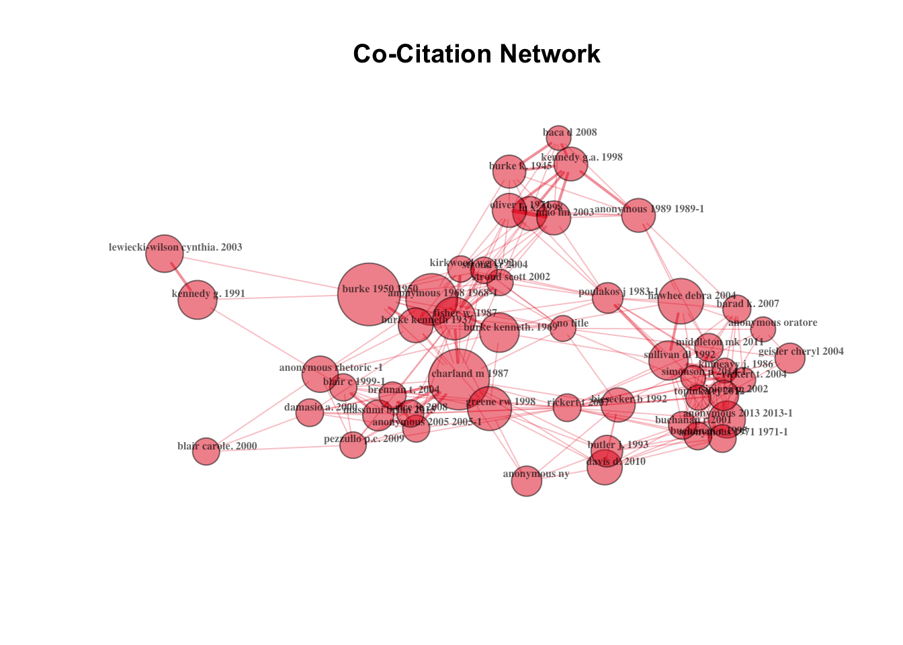
This co-citation network is difficult to read (because I was determined to generate a lot of citations) in some places, but it does help think about the anonymous issues more.There are clearly some Anonymous authors that are playing a large role within the network. But it’s also unclear whether an article marked with anonymous and a year that are the same (for example two articles with an anonymous author from 1986) are counted together.
This network does have a couple central areas/groups. They include:
Burke with Anonymous
This large grouping is mostly just Burke. When looking at a summary of articles, two of those anonymous articles in the cluster were counted with some limited title data, and I was able to identify them as works from Burke. This supports my suspected issue with anonymous. There are a few other authors like Stroud and Kirkwood, which suggests that these might be the authors that we get to Burke from. Poulakos also is connected to the Burke group and might be another source of Burke citations or themes. This block is likely a way that authors are defining rhetoric, or the texts they use as the basis to build their literature review.
Kennedy, Burke, Mao, and Baca
This Kennedy work is his work, not the translation of Aristotle. And the Baca piece is Landmark Essays on Rhetoric of Difference. I suspect that the citation is actually one of the essays within the collection, not the collection as a whole. This group seems disparate, but when you add Mao, it seems to be a cross-cultural or multi-cultural rhetorics cluster.
Biesecker, Judith Butler, Geisler, and Davis
This seems to be a feminist cluster, or something similar to that. These are all critical theory-esque texts that ask questions of meanings. Both the Biesecker and Butler pieces address gender issues and identity. The Davis and Geisler pieces are about agency.
With these clusters, it’s clear that there is some overlap and identifiable patterns, but at times it still feels difficult to identify or see more patterns. I also was still really bothered by the “anonymous” issue - knowing that at the very least Burke is under counted in my data set. So I decided I needed to hand code my data.
Hand Coding Decisions & The Issue of Anonymous
When I did some research, I found that there were a couple articles that had identified a similar issue on WOS. Shamsi et al (2022) found in their sample of 1,420,842 articles or records on WOS that around 1.5% had no author meta data, and were thus marked “anonymous.” This proportionately is a declining problem. In other words, although the number of citations marked as “anonymous” is increasing, it is not proportionate to the number of articles that are uploaded or added to WOS (Shamsi et al, 2022). They list two reasons for anonymous as the author meta data, one is the practice of publishing academic work anonymously (not common in rhetoric), or indexing issues when the article or book is added to web of science that result in imprecise meta data. Liu et al (2018) also found instances of imprecise meta data, this time address information. This study found that over a fifth of the articles sampled are completely missing the information. They point out that this and other missing meta dat can greatly impact computational and citation analyses.
I decided the best course of action was to hand code my data based on the articles based on the References listed on the online versions of the articles. This is not available on WOS for all articles on my list, so I used the Taylor & Francis database to find all of my information. Annecdotally, I was very surprised at the wide range of issues I identified during hand coding. Some of them include
Editors of collections listed as the author
Translators listed as the author
Single author listed for multi-author article
Second author listed as the first and only author
People spelling authors’ names wrong (i.e. Beisecker)
Total number of cited works incorrect
First name last name formatting (as opposed to last name, first name)
Different numbers of initials (i.e. Gross, A. v.s. Gross, A.G.)
Although I have not run any type of formal analysis I’ve also included a few experience based observations here: * Many issues were related to books that were published before 2000
This resulted in major issues for authors like Burke and Derrida
Many of the citations issues impacted women and people of color
For example, Goankar does not appear in the original data set, but pops up in the hand coded version
The biggest change is probably Carolyn Miller
Two chapters/books that were often cited had meta data that was not at all associated with Miller or the work
I was only able to identify them when I had eliminated all the other references
Miller is featured fairly prominently in the count and citation network for the hand coded version
Not only do these issues impact citation analysis, but also future career goals and metrics for published scholars. Tenure cases, promotions, and other things take into account publications (and potentially publication metrics). It’s an important issue to discuss with limited articles and documentation to address the issue.
Second Round of Analysis
Prepare the Data
Before hand coding and to do many of the functions using igraph and ggraph, I had to separate out my cited references into their own rows.
# Separate citations into rowsdf <- df_raw %>%separate_longer_delim(cols ="Cited References", delim =";") %>%mutate(`Cited References`=str_trim(`Cited References`))
Count the citations
Once I was finished with hand coding, I started by doing counts of citations as a whole, and then by affiliation.
#Load different librarieslibrary(igraph)
Attaching package: 'igraph'
The following objects are masked from 'package:lubridate':
%--%, union
The following objects are masked from 'package:dplyr':
as_data_frame, groups, union
The following objects are masked from 'package:purrr':
compose, simplify
The following object is masked from 'package:tidyr':
crossing
The following object is masked from 'package:tibble':
as_data_frame
The following objects are masked from 'package:stats':
decompose, spectrum
The following object is masked from 'package:base':
union
library(ggraph)library(tidygraph)
Attaching package: 'tidygraph'
The following object is masked from 'package:igraph':
groups
The following object is masked from 'package:stats':
filter
This gave me a good idea of what the citations looked like across groups and there were some significant changes in numbers from the non-hand coded data. Some of my insights here include:
Burke, as expected, is higher than before, cited more than once per article in the data set
Aristotle (and other classical authors) are more pronounced, a finding I was expecting
Fisher stands out in the data set, but it is an outlier. Almost all of those citations are from 1 article.
Foucault and other critical theorists are higher in this data set and than I was expecting
Some authors like Blaire, C. dropped out of the top 10, while others like Hawhee, D. remain
Visualizations
Now that I have a count and organized data, I wanted to visualize it. This is the part I struggled with the most. There is a lot of good documentation available about generating graphs, but making them readable or look good is mostly trial and error. I consulted my in house SME on this issue and referenced many guides like Mcnulty, 2022 & UC Davis Data Lab. Nevertheless, here’s the code I landed on.
Warning: Using the `size` aesthetic in this geom was deprecated in ggplot2 3.4.0.
ℹ Please use `linewidth` in the `default_aes` field and elsewhere instead.
Warning: ggrepel: 50 unlabeled data points (too many overlaps). Consider
increasing max.overlaps
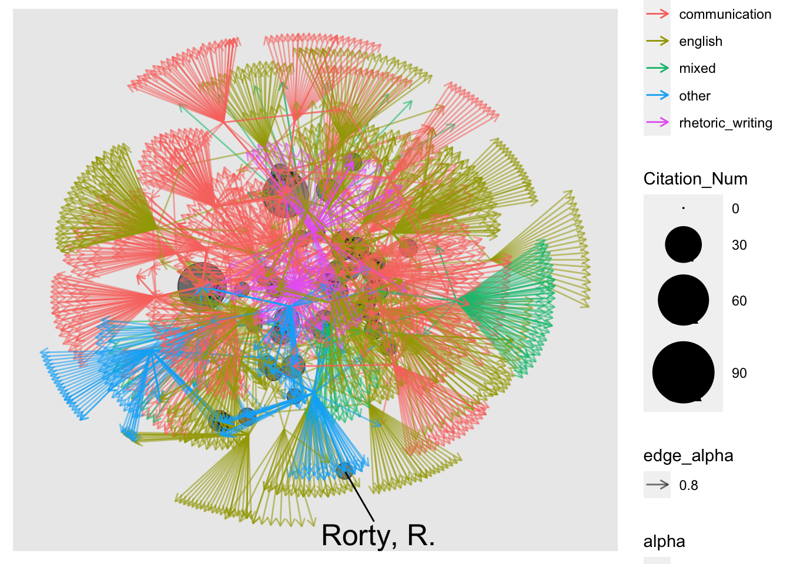
You’ll notice that even with a lot of formatting, this graph looks like a “hairball.” This is the official name given to network graphs that have so many nodes and edges that they can’t be read. To get the “cleaner” version I just showed you, I had to export the graph and increase the aspect ratio/pixels by a factor of 1000.
I wanted to do a co-citation analysis too. This required a lot more putzing with the data. The biggest issue ultimately was that I had to get rid of duplicates (I coded each instance of an author just as their name, not the name and year/title of the publication). If I were to continue this project, I may specify authors and year or authors and title of works. That gives me more detail about not only who, but which work people are citing. I suspect that I already have most of that data. For example, Charland, M. appears in a prominent place within the data set, and it’s one particular work, “Constitutive rhetoric: The case of the peuple quebecois.” But for scholars like Burke, it would be interesting to see how their positions change/the co-citation graphs change with which works are being primarily cited and with which authors.
# Remove any duplicates from the dataframefiltered_df <- df_handcoded %>%unique()# Convert dataframe into graphfiltered_graph <-as_tbl_graph(filtered_df) # Perform co-citation analysis on the graphcocitation <-cocitation(filtered_graph) %>%# This will result in a matrixas.data.frame() %>%# We then convert the matrix back into a dataframerownames_to_column("first_author") %>%# The matrix has row names; we just want these as a columnpivot_longer(where(is.numeric), names_to ="second_author") %>%# We'll now pivot the matrix-looking dataframe into just three columnsfilter(value >1) %>%# Filter data to only see at least two co-citations (i.e., cited more than just in the same article)filter(first_author != second_author) %>%# Remove identity values (e.g., "Plato" with "Plato")arrange(desc(value)) # Sort in descending value# Convert co-citation analysis above into a graphcocitation_graph <-as_tbl_graph(cocitation) %>%mutate(Citation_Num =centrality_degree(mode ="in"))# Create graphggraph(cocitation_graph, layout ='stress') +geom_edge_link(aes(color ="grey",alpha =0.2)) +geom_node_point(aes(size = Citation_Num,alpha =0.2)) +geom_node_text(aes(label = name,size = Citation_Num,vjust =-.5),repel =TRUE) +scale_size_continuous(range =c(3, 20))
Warning: ggrepel: 40 unlabeled data points (too many overlaps). Consider
increasing max.overlaps
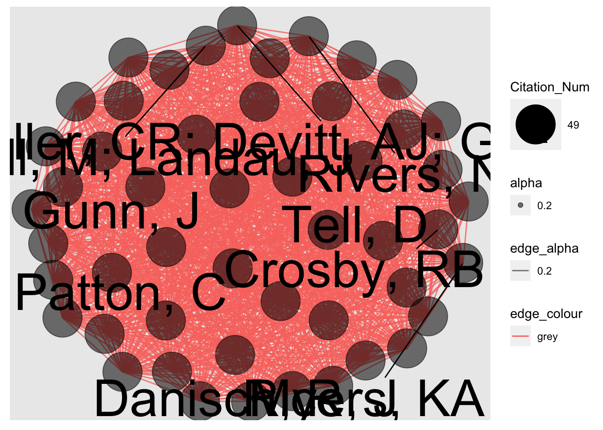
Here’s an easier to read version:
Hand Coded Co-Citation
This co-citation graph shows a few more collective areas or clusters that can be identified.
The Feminism Cluster
There is still a gender and feminist rhetoric cluster in the middle of the graph. It includes similar authors as the non-hand coded data like: Butler, Biesecker, and Davis. But there are a few additions: Miller, C.R., Hawhee, and Blair, C. Although these authors have other prominent scholarship areas, for example, Blair is a leading citation for public memory work in rhetoric, with them all clustered together, I consider that most of the works here are related to gender. Hawhee stands in this group as an outlier, I believe the citations from her are likely related to her work with the classical authors and Burke, and just happens to cluster with these folks. Although, she is also the author in this group I know the least about.
Foundational Texts
There is also a fairly clear cluster at the bottom of foundational texts that include: Aristotle, Bitzer, Plato and Dewey. If you expand out a little bit, you’ll also find Farrell and Cicero. These authors lean more communication heavy, especially with the inclusion of Bitzer and Farrell. I suspect that all of these texts are used in literature review to nod towards theory that the author is building on or reflecting on.
Updated Foundational Work
There is a somewhat diffuse group at the bottom right of the graph that seem to be an updated version of the foundational texts group. Although I’m not entirely convinced they fit together as a group. I would expect Campbell, K.K. to fit more in the feminism cluster, but perhaps she has become the de-facto citation for gender/foundational work. And it should be noted, Campbell and Biesecker connect clearly. Gunn, J. boasts work on presidential rhetoric, but also ritual and the occult. They are also two of the published authors in the data set and may be an “outlier” as they are citing their own work in their articles. Schiappa, E. and Kennedy, G. both have works reflecting on classical authors, as does Glenn, C. with a gender component. I suspect that these three lead me more to believe that this is the “new” foundational group.
Niche Citation Cloud
There is a cloud of authors around Charland in the top right of the graph. I like to think of this grouping as the “niche” citation group. In other words, if you are writing on a particular topic like narrative or constitutive rhetoric, there is an author (Fisher and Charland, respectively) that need to be cited. So although they don’t have larger scale to their citations, they are important to acknowledge within the literature review. Condit, Rice, J., and Ahmed, S. all carry a similar singular (or few) works that are frequently cited for particular topics.
I also wanted to do some of this work by Affiliation. So here are the graphs that resulted of the more granular analysis.
Warning: ggrepel: 16 unlabeled data points (too many overlaps). Consider
increasing max.overlaps
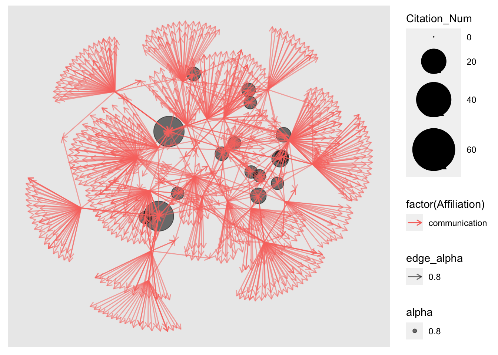
## Co Citation# Remove any duplicates from the dataframefiltered_comm <- df_comm_hc %>%unique()# Convert dataframe into graphfiltered_graph_comm <-as_tbl_graph(filtered_comm) # Perform co-citation analysis on the graphcocitation_comm <-cocitation(filtered_graph_comm) %>%as.data.frame() %>%rownames_to_column("first_author") %>%pivot_longer(where(is.numeric), names_to ="second_author") %>%filter(value >1) %>%filter(first_author != second_author) %>%arrange(desc(value)) # Convert co-citation analysis above into a graphcocitation_graph_comm <-as_tbl_graph(cocitation_comm) %>%mutate(Citation_Num =centrality_degree(mode ="in"))# Create graphggraph(cocitation_graph_comm, layout ='stress') +geom_edge_link(aes(color ="grey",alpha =0.2)) +geom_node_point(aes(size = Citation_Num,alpha =0.2)) +geom_node_text(aes(label = name,size = Citation_Num,vjust =-.5),repel =TRUE) +scale_size_continuous(range =c(3, 20))
Warning: ggrepel: 38 unlabeled data points (too many overlaps). Consider
increasing max.overlaps
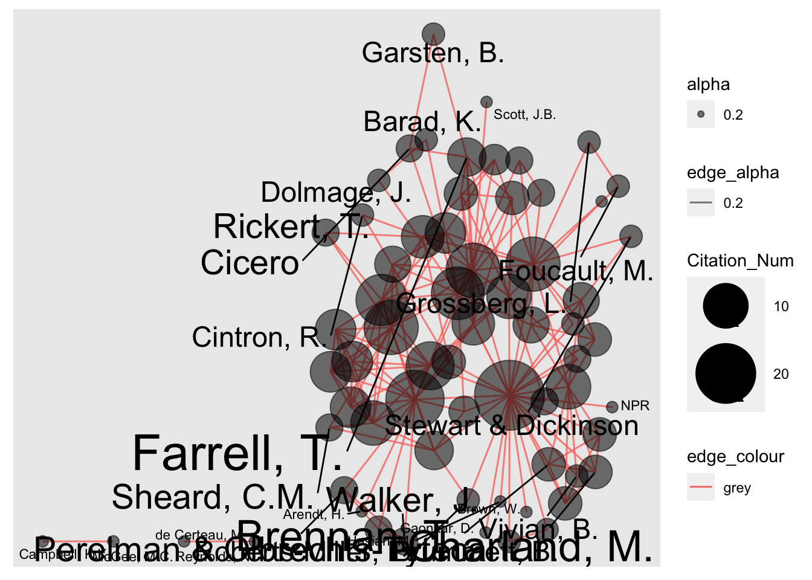
An easier to read version:
Comm Co-Citation Graph
The communication co-citation graph is quite integrated compared to some of the other co-citation graphs that I’ll show shortly. There are a couple take aways for me here:
Burke and Aristotle play a pretty central role to the citations
There are other core authors as well: Bitzer, Gross, Leff, Rice, Blair.
Many of the other big names connected to Aristotle are classical authors: Sullivan, Kinneavy, Poulakos, Leff
Miller and Hawhee in the middle is an interesting cluster especially with it’s connection to Dewey. I’m not quite sure what it is.
The clusters feel like an “eras” ring almost
Start with super foundational authors Burke and Aristotle, move outwards with bigger authors in the 80s and 90s that write about and extend those authors
Then we get to the “next era” with authors like Rice, Ceccarelli, and Blair
This isn’t completely consistent, because Cicero appears in one of the “outer” spots as does Charland and Brummett, as well as the Perelman and Olbrechts-Tyteca
Warning: ggrepel: 9 unlabeled data points (too many overlaps). Consider
increasing max.overlaps
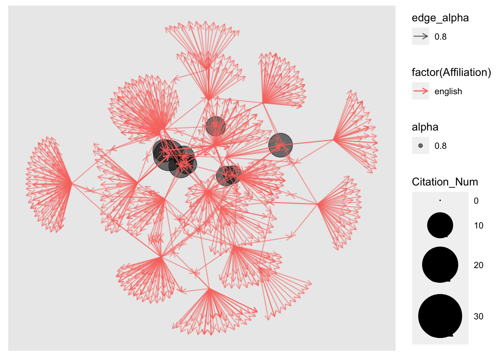
## Co Citation# Remove any duplicates from the dataframefiltered_eng <- df_eng_hc %>%unique()# Convert dataframe into graphfiltered_graph_eng <-as_tbl_graph(filtered_eng) # Perform co-citation analysis on the graphcocitation_eng <-cocitation(filtered_graph_eng) %>%as.data.frame() %>%rownames_to_column("first_author") %>%pivot_longer(where(is.numeric), names_to ="second_author") %>%filter(value >1) %>%filter(first_author != second_author) %>%arrange(desc(value)) # Convert co-citation analysis above into a graphcocitation_graph_eng <-as_tbl_graph(cocitation_eng) %>%mutate(Citation_Num =centrality_degree(mode ="in"))# Create graphggraph(cocitation_graph_eng, layout ='stress') +geom_edge_link(aes(color ="grey",alpha =0.2)) +geom_node_point(aes(size = Citation_Num,alpha =0.2)) +geom_node_text(aes(label = name,size = Citation_Num,vjust =-.5),repel =TRUE) +scale_size_continuous(range =c(3, 20))
Warning: ggrepel: 17 unlabeled data points (too many overlaps). Consider
increasing max.overlaps
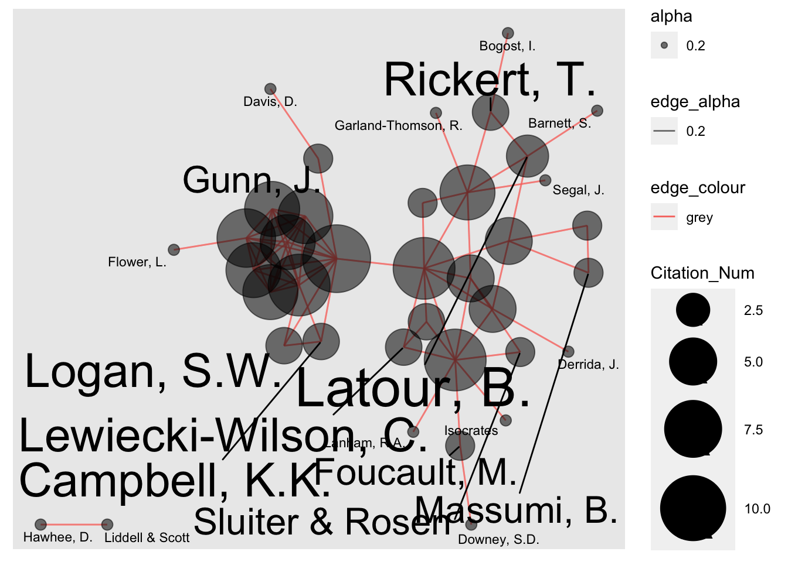
An easier to read version:
English Co-Citation
The English graph is a lot more separated than the Communication graph.
You have two distinct clusters, one centered on Kennedy and one centered on Aristotle. They are both clearly connected authors, Kennedy has the most cited translation of Aristotle, but also his own works on the classical rhetorical works. Attached to Aristotle are other classical authors (Cicero, Plato) and critical theorists (Foucault, Latour). There’s also a collection of other theorists that relate to the core authors.
The authors collected around Kennedy seem to form a group of multi-cultural, intercultural rhetoric with specificity in colonialism and pedagogy. This is similar to one of the clusters in the all, non-hand coded graph, but with different authors.
## Co Citation# Remove any duplicates from the dataframefiltered_mix <- df_mix_hc %>%unique()# Convert dataframe into graphfiltered_graph_mix <-as_tbl_graph(filtered_mix) # Perform co-citation analysis on the graphcocitation_mix <-cocitation(filtered_graph_mix) %>%as.data.frame() %>%rownames_to_column("first_author") %>%pivot_longer(where(is.numeric), names_to ="second_author") %>%filter(value >1) %>%filter(first_author != second_author) %>%arrange(desc(value)) # Convert co-citation analysis above into a graphcocitation_graph_mix <-as_tbl_graph(cocitation_mix) %>%mutate(Citation_Num =centrality_degree(mode ="in"))# Create graphggraph(cocitation_graph_mix, layout ='stress') +geom_edge_link(aes(color ="grey",alpha =0.2)) +geom_node_point(aes(size = Citation_Num,alpha =0.2)) +geom_node_text(aes(label = name,size = Citation_Num,vjust =-.5),repel =TRUE) +scale_size_continuous(range =c(3, 20))
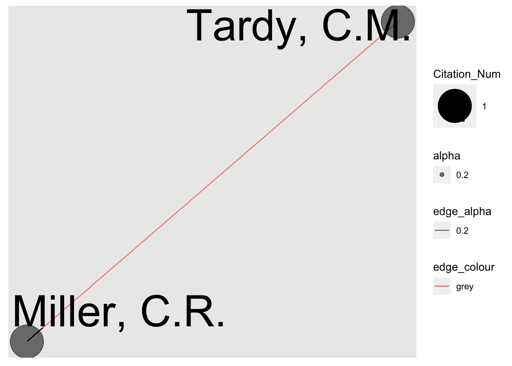
This graph appears as it does because of the size of my data set. There are limited mixed articles in the data set and they are about fairly different topics. This pairing of Miller and Tardy are the only two articles that are cited together in more than one article. Both authors have pieces on genre, and I suspect that’s why they are paired together.
Warning: ggrepel: 1 unlabeled data points (too many overlaps). Consider
increasing max.overlaps
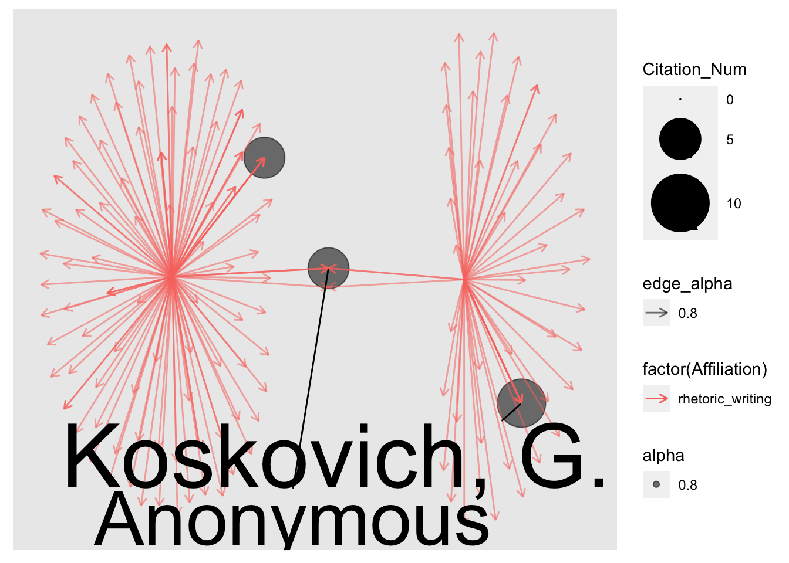
## Co Citation# Remove any duplicates from the dataframefiltered_rstc <- df_rstc_hc %>%unique()# Convert dataframe into graphfiltered_graph_rstc <-as_tbl_graph(filtered_rstc) # Perform co-citation analysis on the graphcocitation_rstc <-cocitation(filtered_graph_rstc) %>%as.data.frame() %>%rownames_to_column("first_author") %>%pivot_longer(where(is.numeric), names_to ="second_author") %>%filter(value >1) %>%filter(first_author != second_author) %>%arrange(desc(value)) # Convert co-citation analysis above into a graphcocitation_graph_rstc <-as_tbl_graph(cocitation_rstc) %>%mutate(Citation_Num =centrality_degree(mode ="in"))# Create graphggraph(cocitation_graph_rstc, layout ='stress') +geom_edge_link(aes(color ="grey",alpha =0.2)) +geom_node_point(aes(size = Citation_Num,alpha =0.2)) +geom_node_text(aes(label = name,size = Citation_Num,vjust =-.5),repel =TRUE) +scale_size_continuous(range =c(3, 20))
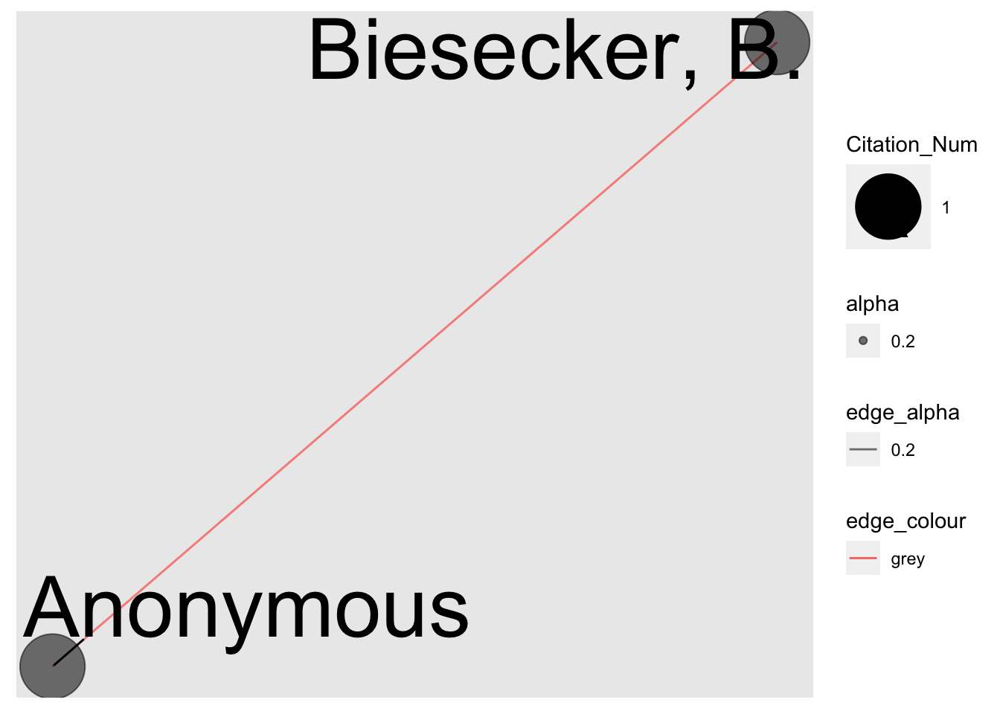
Similarly to the mixed graph, my data set for RSTC is small, only two articles. The only thing I can glean from this graph is that Biesecker makes an appearance in both as does some sort of primary source (something the author may be analyzing or a news source with no author). An increase in data set might get me more information here, but there are few programs like ours and Syracuse’s and thus we may not have enough data to generate interesting graphs.
Warning: ggrepel: 6 unlabeled data points (too many overlaps). Consider
increasing max.overlaps
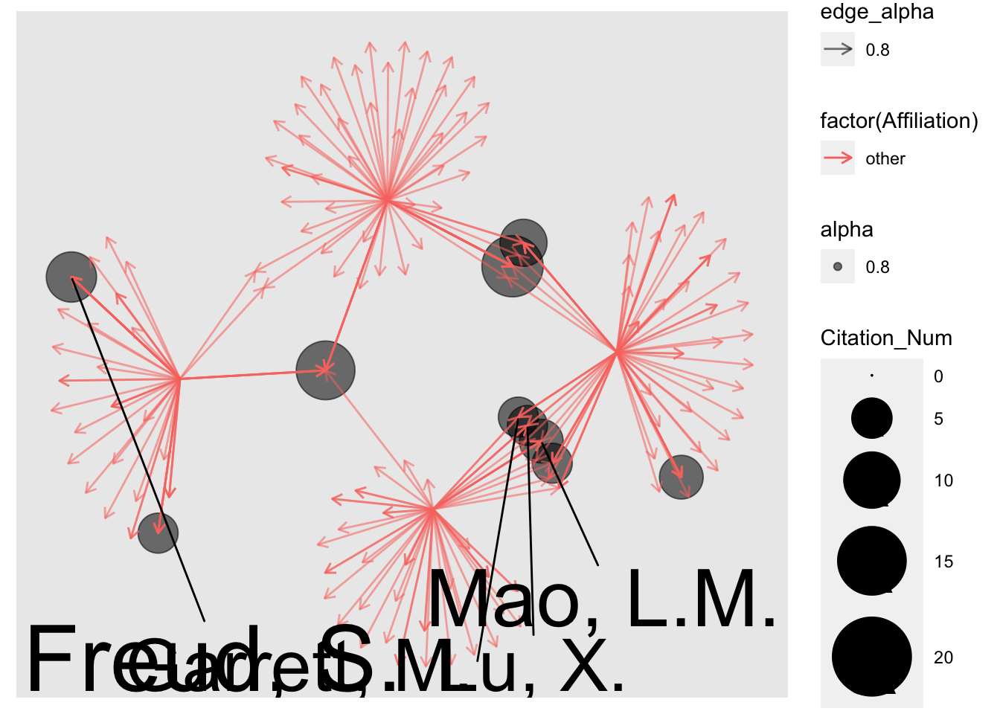
## Co Citation# Remove any duplicates from the dataframefiltered_other <- df_other_hc %>%unique()# Convert dataframe into graphfiltered_graph_other <-as_tbl_graph(filtered_other) # Perform co-citation analysis on the graphcocitation_other <-cocitation(filtered_graph_other) %>%as.data.frame() %>%rownames_to_column("first_author") %>%pivot_longer(where(is.numeric), names_to ="second_author") %>%filter(value >1) %>%filter(first_author != second_author) %>%arrange(desc(value)) # Convert co-citation analysis above into a graphcocitation_graph_other <-as_tbl_graph(cocitation_other) %>%mutate(Citation_Num =centrality_degree(mode ="in"))# Create graphggraph(cocitation_graph_other, layout ='stress') +geom_edge_link(aes(color ="grey",alpha =0.2)) +geom_node_point(aes(size = Citation_Num,alpha =0.2)) +geom_node_text(aes(label = name,size = Citation_Num,vjust =-.5),repel =TRUE) +scale_size_continuous(range =c(3, 20))
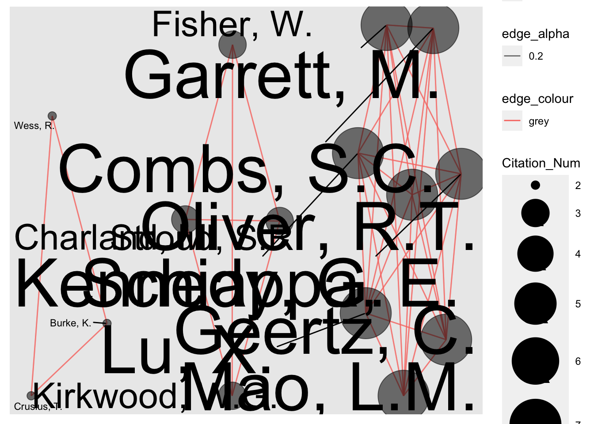
An easier to read version: Similar to the last two graphs, I have a small “other” data set. And I am still unsure how to interpret this category. These authors are labelled as “other” because they recieved their PhDs in Linguistics or Philosophy. But now, two of those authors work in communication departments, and one works in in an English department. I would think that might impact their citational practices in the field more than their degree. But they provide an interesting thought experiment nonetheless.
There are three distinct groups of citations, One of the larger ones is focused around Oliver, R.T., Kennedy, Schiappa, and Mao on the right side of the draft is another multi- or cross cultural rhetoric cluster. The middle cluster with Charland, Kirkwood, Fisher, and Stroud seems to be a narrative and other basic theory citation cluster. The third and smallest cluster on the left is a Kenneth Burke cluster. Burke is one node and then the other two are Wess and Crusius, both scholars who’s work focuses on Burke.
Conclusions & Next Steps
This project feels particularly exploratory because of needing to figure out the computational element, but also the small data set. From that, I can make some limited conclusions and I’ll offer some reflections on the process.
There’s Connections, but They’re Not Always Clear
In each iteration of co citation network graphs, there are instances of clusters that can be given loose labels.
One big thing that I was not able to figure out in relation to my research question was coloring the big co-citation graph by affiliation. There was no way that I (or the internet/my in house r SME) could figure out to color code, partially because what does the graph do when there is a link between citations in articles with english affiliation and other articles with communication affiliation. Although I think there are still some conclusions that I can draw from the co-citation graphs in comparing them as a whole and by field, as well as the counting, this color coded co-citation graph was the first image I had for this project and it couldn’t be brought to fruition.
Communication is More Connected than English
Comparing the counts and the co-citation graphs for both communication and english suggests that the citation practices for the communication trained publications are more centralized. There are higher counts for the top citations and the citations branch from central clusters for communication. English has smaller counts for the top citations and are centralized around two distinct clusters. The english co-citation graph is also less densely populated than the communication co-citation graph which means that there are less authors cited together in multiple publications in the sample. This could be a symptom of a smaller data set, but I think it suggests a potential pattern. There is also something to be said about the types of articles being published by the affiliations in RSQ. Anecdotally, I felt like many of the english articles were more “niche” topics whereas the communication articles seemed a little more centralized or focused. So again, perhaps this will even out once my data set is bigger.
We’re Trying to Impress Each Other
This might be a little bit of a stretch, but I feel like at times English and Comm scholars are trying to impress each other. For example, Burke is not cited frequently in the English affiliation group, and there is more of a focus on Aristotle, Plato, Cicero and Plato. In the Comm affiliation group, Burke is the most cited author, not Aristotle (although Aristotle still features, as does Burke in the English group). This runs counter to my experiences in coursework, but also reading journals that are more specific to the field. Burke is not as frequent as citation as Aristotle in Quarterly Journal of Speech but is significantly higher here. Are we pandering to the “other side of the aisle” for this journal?
One potential approach to testing this thought could be including comparisons of more field specific journals, or increasing my data set size to see if this feels like it still holds true.
What About Newer Research?
The most recent publication in my data set is from 2019, and there are a few from 2018, but many are 2016 and earlier since I was looking for the top 50 cited. I think that some of the patterns in this data set would still hold, but wonder if there would be a shift in where the citations are centralized. I suspect that there might still be nods to the bigger authors, but the second and third “rings” of citations might shift some.
Next Steps
As I’ve alluded to, I plan to make the data set bigger. I think this way I can avoid outliers (like Fisher being cited 10 of 12 total in one article). But I think that the larger the data set, the better I’ll be able to make some conclusions. I suspect I’ll at least expand to the 100 top cited papers, and likely add some of the more recent articles for comparison. Depending on how fast I get at hand coding, I could expand it more. The code that I have works for my analysis purposes so my biggest constraint is hand coding.
I expect I’ll also want to include some of the statistical points of co-citation, not just the visuals. Thinking about calculating the two different variables and what that means about the data set. That means more explaining of why we’re doing this, but the SIGDOC proceedings piece did a nice job of this (Stephens & Applen, 2016).
Ultimately I’d like to write it up into an article and submit it to RSQ. That means I’ll also need to think critically about whether author alone or specifying the article as well as the author of the citation is important. That would likely help identify clusters, but it may not give me as zoomed out of a view to answer my question…? I’m also thinking about how to think about affiliation. Is PhD the best way to do this? I think so. But I may consider how to classify the “other” authors, I think it may be helpful to code based on the departments that they work in/have gotten tenure in. This may clarify the data set a little bit, but it feels less consistent. This decision may depend on how many “other” authors appear in the data set. I’d also consider taking a page from Faris and Wilson (2021) and considering graduate syllabi, that could enhance or supplement citational practices (especially considering syllabi from both English and Communication rhetorical theory courses).
I’ll also need to think about the approach to the article. I think keeping the experiential aspect is important to me, and I don’t want to come across as too critical, especially of the journal. Perhaps I emphasize the reflexive nature of the field and focus on curiosity with a “new age” method. Multiple faculty who I’ve mentioned the project to have been interested/intreagued, so I am tempted to think it would be well received but am not sure about how the editors might see it.
Experience with the Project
I am feeling accomplished by tired/frustrated at the end of this project. Part of the reason I picked the project at the outset was I was really curious about the answer, but also that I thought it would be simple. But when I ran into snafus (thank you, Bibliometrix) and got frustrated with my answers, I did what I normally do and dug deeper. This lead to me wanting the best answer that I could get and many hours of hand coding and watching Gephi and RStudio tutorials. Even with this extra assistance, I felt like I wouldn’t be able to complete the project in the way that I wanted.
I think the biggest take away from the project is knowing when to ask for help. I feel like I held off longer than I needed to because I was determined to figure it out myself. I asked ChatGPT and that was not helpful (or at least the code that it suggested across the ways I phrased my questions was not helpful). I read a lot of tutorials that either didn’t work or I couldn’t make sense of. I ended up getting help from Nick when I was complaining that I couldn’t get something to work and he happened to know the solution. The “lingo” online is still somewhat difficult for me to follow and so some of the approaches I thought wouldn’t help for my type of data were possible. For example, almost all the co-citation tutorials give examples with just numbers, but a lot of that analysis can be done with any type of data.
I do not plan on figuring out graphs by hand in R again any time soon. As we’ve discussed, I now understand why people do not customize when they are doing co-citation work. It’s been really challenging to hobble together something that works. But I was able to do some of the filtering by affiliation and separating my spread sheet out on my own. So perhaps my code, if the article is published, could help someone trying to do something similar in the future.
Works Cited
Fancher, P., Faris, M. (2022) Social network analysis and feminist methodology. In C. VanKooten and V. Del Herio Methods and Methodologies for Research in Digital Writing and Rhetoric: Centering Positionality in Computers and Writing Scholarship, Volume 1. pp. 135-162.
Faris, M.J., Wilson, G. (2021) Mapping technical communication as a field: A co-citation network analysis of graduate-level syllabi. In J. Schreiber and L. Meloncon *Assembling critical components: A framework for sustaining technical and professional communication.” pp. 69-115.
Graham, S.S. (2021) The Opioid Epidemicand the pursuit of moral medicine: A computational-rhetorical analysis. Written Communication 38(1), 3-30.
Graham, S.S. (2020) The bergson legacy. In Where’s the rhetoric? Imagining a unified field, pp. 21-58. The Ohio State University Press, Columbus, OH.
Liu, W., Hu, G., Tang, L. (2018) Missing author address information in web of science: An explorative study. Journal of Informatics, 12(3), 985-997.
Majdik, Z. (2019) A computational approach to assessing rhetorical effectiveness: Agentic framing of climate change in the congressional record, 1994-2016. Technical Communication Quarterly, 28(3), 207-222.
Majdisk, Z. Wynn, J. (2023) Building better machine learning models for rhetorical analyses: The use of rhetorical feature sets for training artificial neural network models. Technical Communication Quarterly, 32(1), 63-78.
McNulty, K. (2022) Visualizing graphs. In Handbook of Graphs and Networks in People Analytics.
Miller, B. (2022) Distant readings of disciplinarity: Knowing and doing in composition/rhetoric dissertations. Utah State University Press, Logan, UT.
Shamsi, A., Silva, R.C., Wang, T., Raju, N.V., Santos-d’Amorim, K. (2022) A grey zone for bibliometrics: Publications indexed in web of science as anonymous. Scientometrics, 5989-6009.
Smith, Elizabeth Overman. (2000). Points of reference in technical communication scholarship. Technical Communication Quarterly, 9(4), 427-453
Stephens, S., Applen, J.D. (2016) Rhetorical dimensions of social network analysis visualization for public health. IEEE Internatinoal Professional Communication Conference (IPCC), 1-4.
Tham, J. (2023) The CCCC outstanding dissertation award in technical communication, 2004–2022: Doctoral research topics, methods, and iomplications for the field. Technical Communication Quarterly, 1-27.


 Similar to the last two graphs, I have a small “other” data set. And I am still unsure how to interpret this category. These authors are labelled as “other” because they recieved their PhDs in Linguistics or Philosophy. But now, two of those authors work in communication departments, and one works in in an English department. I would think that might impact their citational practices in the field more than their degree. But they provide an interesting thought experiment nonetheless.
Similar to the last two graphs, I have a small “other” data set. And I am still unsure how to interpret this category. These authors are labelled as “other” because they recieved their PhDs in Linguistics or Philosophy. But now, two of those authors work in communication departments, and one works in in an English department. I would think that might impact their citational practices in the field more than their degree. But they provide an interesting thought experiment nonetheless.